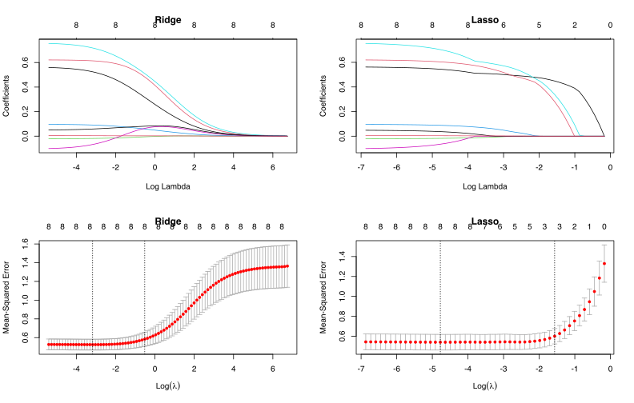

Stat 406
Daniel J. McDonald
Last modified – 27 September 2023
\[ \DeclareMathOperator*{\argmin}{argmin} \DeclareMathOperator*{\argmax}{argmax} \DeclareMathOperator*{\minimize}{minimize} \DeclareMathOperator*{\maximize}{maximize} \DeclareMathOperator*{\find}{find} \DeclareMathOperator{\st}{subject\,\,to} \newcommand{\E}{E} \newcommand{\Expect}[1]{\E\left[ #1 \right]} \newcommand{\Var}[1]{\mathrm{Var}\left[ #1 \right]} \newcommand{\Cov}[2]{\mathrm{Cov}\left[#1,\ #2\right]} \newcommand{\given}{\ \vert\ } \newcommand{\X}{\mathbf{X}} \newcommand{\x}{\mathbf{x}} \newcommand{\y}{\mathbf{y}} \newcommand{\P}{\mathcal{P}} \newcommand{\R}{\mathbb{R}} \newcommand{\norm}[1]{\left\lVert #1 \right\rVert} \newcommand{\snorm}[1]{\lVert #1 \rVert} \newcommand{\tr}[1]{\mbox{tr}(#1)} \newcommand{\brt}{\widehat{\beta}^R_{s}} \newcommand{\brl}{\widehat{\beta}^R_{\lambda}} \newcommand{\bls}{\widehat{\beta}_{ols}} \newcommand{\blt}{\widehat{\beta}^L_{s}} \newcommand{\bll}{\widehat{\beta}^L_{\lambda}} \]
\[\Expect{Y \given X=x} = \sum_{j=1}^p x_j\beta_j\]
Now we relax this assumption of linearity:
\[\Expect{Y \given X=x} = f(x)\]
How do we estimate \(f\)?
For this lecture, we use \(x \in \R\) (1 dimensional)
Higher dimensions are possible, but complexity grows exponentially.
We’ll see some special techniques for \(x\in\R^p\) later this Module.
For any \(f : \R \rightarrow [0,1]\)
\[f(x) = f(x_0) + f'(x_0)(x-x_0) + \frac{1}{2}f''(x_0)(x-x_0)^2 + \frac{1}{3!}f'''(x_0)(x-x_0)^3 + R_3(x-x_0)\]
So we can linearly regress \(y_i = f(x_i)\) on the polynomials.
The more terms we use, the smaller \(R\).
arcuate %>%
ggplot(aes(position, fa)) +
geom_point(color = blue) +
geom_smooth(aes(color = "a"), formula = y ~ poly(x, 4), method = "lm", se = FALSE) +
geom_smooth(aes(color = "b"), formula = y ~ poly(x, 7), method = "lm", se = FALSE) +
geom_smooth(aes(color = "c"), formula = y ~ poly(x, 25), method = "lm", se = FALSE) +
scale_color_manual(name = "Taylor order",
values = c(green, red, orange), labels = c("4 terms", "7 terms", "25 terms"))Really, this is still linear regression, just in a transformed space.
It’s not linear in \(x\), but it is linear in \((x,x^2,x^3)\) (for the 3rd-order case)
So, we’re still doing OLS with
\[\X=\begin{bmatrix}1& x_1 & x_1^2 & x_1^3 \\ \vdots&&&\vdots\\1& x_n & x_n^2 & x_n^3\end{bmatrix}\]
So we can still use our nice formulas for LOO-CV, GCV, Cp, AIC, etc.
library(cowplot)
g1 <- ggplot(tibble(cvscores, degrees = seq(max_deg)), aes(degrees, cvscores)) +
geom_point(colour = blue) +
geom_line(colour = blue) +
labs(ylab = 'LOO-CV', xlab = 'polynomial degree') +
geom_vline(xintercept = which.min(cvscores), linetype = "dotted")
g2 <- ggplot(arcuate, aes(position, fa)) +
geom_point(colour = blue) +
geom_smooth(
colour = orange,
formula = y ~ poly(x, which.min(cvscores)),
method = "lm",
se = FALSE
)
plot_grid(g1, g2, ncol = 2)Procedure 1:
Pick your favorite basis. This is not as easy as it sounds. For instance, if \(f\) is a step function, linear splines will do well with good knots, but polynomials will be terrible unless you have lots of terms.
Perform OLS on different orders.
Use model selection criterion to choose the order.
Procedure 2:
Use a bunch of high-order bases, say Linear splines and Fourier series and whatever else you like.
Use Lasso or Ridge regression or elastic net. (combining bases can lead to multicollinearity, but we may not care)
Use model selection criteria to choose the tuning parameter.
Split arcuate into 75% training data and 25% testing data.
Estimate polynomials up to 20 as before and choose best order.
Do ridge, lasso and elastic net \(\alpha=.5\) on 20th order polynomials, B splines with 20 knots, and Fourier series with \(p=20\). Choose tuning parameter (using lambda.1se).
Repeat 1-3 10 times (different splits)
library(glmnet)
mapto01 <- function(x, pad = .005) (x - min(x) + pad) / (max(x) - min(x) + 2 * pad)
x <- mapto01(arcuate$position)
Xmat <- cbind(
poly(x, 20),
splines::bs(x, df = 20),
cos(2 * pi * outer(x, 1:20)), sin(2 * pi * outer(x, 1:20))
)
y <- arcuate$fa
rmse <- function(z, s) sqrt(mean( (z - s)^2 ))
nzero <- function(x) with(x, nzero[match(lambda.1se, lambda)])
sim <- function(maxdeg = 20, train_frac = 0.75) {
n <- nrow(arcuate)
train <- as.logical(rbinom(n, 1, train_frac))
test <- !train # not precisely 25%, but on average
polycv <- map_dbl(seq(maxdeg), ~ cv_nice(lm(y ~ Xmat[,seq(.)], subset = train))) # figure out which order to use
bpoly <- lm(y[train] ~ Xmat[train, seq(which.min(polycv))]) # now use it
lasso <- cv.glmnet(Xmat[train, ], y[train])
ridge <- cv.glmnet(Xmat[train, ], y[train], alpha = 0)
elnet <- cv.glmnet(Xmat[train, ], y[train], alpha = .5)
tibble(
methods = c("poly", "lasso", "ridge", "elnet"),
rmses = c(
rmse(y[test], cbind(1, Xmat[test, 1:which.min(polycv)]) %*% coef(bpoly)),
rmse(y[test], predict(lasso, Xmat[test,])),
rmse(y[test], predict(ridge, Xmat[test,])),
rmse(y[test], predict(elnet, Xmat[test,]))
),
nvars = c(which.min(polycv), nzero(lasso), nzero(ridge), nzero(elnet))
)
}
set.seed(12345)
sim_results <- map(seq(20), sim) |> list_rbind() # repeat it 20 timesIn all these cases, we transformed \(x\) to a higher-dimensional space
Used \(p+1\) dimensions with polynomials
Used \(p+4\) dimensions with cubic splines
Used \(2p+1\) dimensions with Fourier basis
Each case applied a feature map to \(x\), call it \(\Phi\)
We used new “features” \(\Phi(x) = \bigg(\phi_1(x),\ \phi_2(x),\ldots,\phi_k(x)\bigg)\)
Neural networks (coming in module 4) use this idea
You’ve also probably seen it in earlier courses when you added interaction terms or other transformations.
Some methods (notably Support Vector Machines and Ridge regression) allow \(k=\infty\)
See [ISLR] 9.3.2 for baby overview or [ESL] 5.8 (note 😱)
Kernel regression and nearest neighbors
UBC Stat 406 - 2023